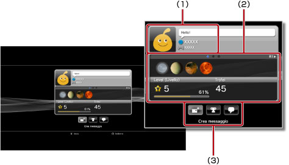
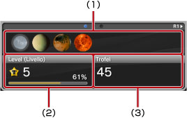

Amici > Elenco Amici > Visualizzazione dei profili
Visualizzazione dei profili
Per utilizzare questa funzione, potrebbe essere necessario aggiornare il software del sistema.
È possibile visualizzare il proprio profilo o quello di un amico. Per vedere il profilo di un amico, selezionare il relativo avatar.

(1) |
Visualizzazione dello stato |
|---|---|
(2) |
Informazioni |
(3) |
Pannello di controllo |
Nota
Per ulteriori informazioni sulla visualizzazione dello stato, vedere  (Amici) > [Elenco Amici] > [Controllo dello stato] in questa guida.
(Amici) > [Elenco Amici] > [Controllo dello stato] in questa guida.
Visualizzazione di informazioni nella schermata di un profilo
In un profilo è possibile visualizzare informazioni quali l'avanzamento in un trofeo, il numero di trofei ottenuti per ogni grado e informazioni dettagliate sugli amici. È possibile scorrere le informazioni premendo il tasto L1 o R1.

(1) |
Trofei vinti di recente |
|---|---|
(2) |
Livello attuale e avanzamento verso il prossimo livello |
(3) |
Numero totale di trofei ottenuti |
Utilizzo del pannello di controllo in [Profilo]
Durante la visualizzazione di un profilo, è possibile eseguire diverse operazioni utilizzando il pannello di controllo. Le icone visualizzate nel pannello di controllo dipendono dallo stato dell'amico.
 |
Menu (titolo del gioco) | Consente di visualizzare un elenco di azioni che possono essere eseguite nel gioco in corso. |
|---|---|---|
 |
Aggiungi un amico | Consente di inviare una richiesta di aggiunta di una persona all'elenco Amici. |
 |
Elenco dei messaggi | Consente di visualizzare un elenco dei messaggi scambiati con l'amico. |
 |
Crea messaggio | Consente di creare un nuovo messaggio. |
 |
Confronta trofei | Consente di confrontare i propri trofei con quelli di un amico. |
 |
Avvia nuova chat | Consente di avviare una chat. |
| Rispondi alla richiesta di un amico | Consente di aprire il messaggio che richiede l'aggiunta come amico e di inviare una risposta. | |
 |
Aggiungi a elenco di blocco | Consente di aggiungere un amico all'elenco di blocco. |
 |
Elimina da elenco di blocco | Consente di eliminare un amico dall'elenco di blocco. |
Note
- Il pannello di controllo non può essere nascosto.
- Il pannello di controllo non viene visualizzato durante la visione del proprio profilo.
Modifica del colore di sfondo per la schermata del profilo
Selezionare l'etichetta in alto a sinistra sulla schermata del profilo, quindi premere il tasto  per visualizzare la gamma dei colori. Dalla gamma, selezionare il colore di sfondo per la schermata del profilo.
per visualizzare la gamma dei colori. Dalla gamma, selezionare il colore di sfondo per la schermata del profilo.

Nota
Non è possibile modificare il colore di sfondo per le schermate dei profili degli altri utenti.
Confronto dello stato dei trofei ottenuti con gli amici
1. |
In |
|---|---|
2. |
Selezionare
|
3. |
Selezionare un gioco.
|